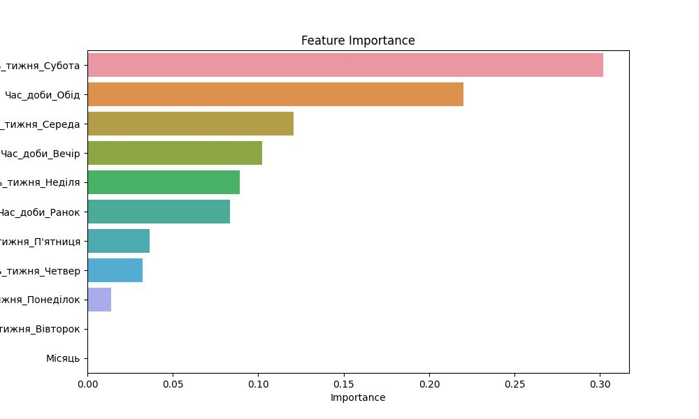

Структура Даних
Цей набір даних описує продажі кухонних товарів у різних підрозділах компанії за певний період часу. Дані включають деталі про типи товарів, назви продуктів, дати та часи транзакцій, а також кількість проданих одиниць і суму виручених коштів. Це дозволяє аналізувати, які товари були найбільш популярними, в яких підрозділах відбувалося більше продажів, і які дати були найбільш активними щодо продажів. Таким чином, цей набір даних є корисним для розуміння тенденцій продажів і поведінки споживачів у різних місцях та в різний час.
Data Analysis
Outliers Detection
Feature Importance
Загальний Опис Даних
-
Аналіз Продажів
Цей набір даних відображає продажі товарів у підрозділах. Він містить інформацію про категорії та назви товарів, дати та часи продажів, кількість проданих одиниць і загальну суму продажу.
-
Популярні товари
Аналізуючи ці дані, можна визначити популярні товари та пікові періоди продажів, що допоможе ефективніше керувати запасами та розробляти маркетингові стратегії.
-
Оптимізація роботи
Ці дані корисні для прийняття обґрунтованих рішень щодо поповнення товарних запасів та оптимізації роботи підрозділу, що позитивно вплине на дохід і задоволеність покупців.
Візуалізація
-
Гістограма сум продажів за період
Гістограма показує суму продажів за кожен день січня 2024 року. Візуалізація кольорова, що допомагає побачити зміни в продажах по днях.
-
Графік сум продажів за період
3ображено іншу візуалізацію сум продажів за певний період
-
Діаграма продажів за адресою Довженка, 7/1
Кругова діаграма, що показує розподіл продажів за категоріями товарів у підрозділі за адресою Довженка, 7/1.

-
Діаграма продажів за адресою Зарічанська, 3/2

Кругова діаграма, що показує розподіл продажів за категоріями товарів у підрозділі за адресою Зарічанська, 3/2.
-
Діаграма продажів за адресою Курчатова, 2/1б
Кругова діаграма, що показує розподіл продажів за категоріями товарів у підрозділі за адресою Курчатова, 2/1б.

-
Діаграма продажів за адресою Панаса Мирного, 14/1а

Кругова діаграма, що показує розподіл продажів за категоріями товарів у підрозділі за адресою Панаса Мирного, 14/1а.
-
Діаграма продажів за адресою Проспект Миру, 56
Кругова діаграма, що показує розподіл продажів за категоріями товарів у підрозділі за адресою Проспект Миру, 56.

-
Діаграма продажів за адресою Пілотська, 117

Кругова діаграма, що показує розподіл продажів за категоріями товарів у підрозділі за адресою Пілотська, 117.
-
Діаграма продажів за адресою Шевченка, 70/1
Кругова діаграма, що показує розподіл продажів за категоріями товарів у підрозділі за адресою Шевченка, 70/1.
-
Діаграма продажів за підрозділами з легендою
Кругова діаграма, що показує розподіл продажів за різними підрозділами компанії. Містить легенду для зручності інтерпретації.
-
Сума продажів десяти товарів
Графік відображає суму продажів десяти найпопулярніших товарів за січень 2024 року. Кожен товар має окрему строку з відповідною сумою продажів. Висновки: Найпопулярніший товар - "Мінітерка Часникотер нерж. сталь (NA0050KT)" з сумою 17724.73. Інші популярні товари включають "Терка Охайний кулінар (HB8829TS)" та "Точилка для ножів Легкоточ з двома точилами кераміка (NA0135KT)".
-
Вплив дня тижня на продажі

Графік відображає частоту покупок протягом тижня, розділену на часові інтервали. Візуалізація допомагає визначити, в які дні тижня спостерігається найбільша активність покупців.
-
Вплив часу доп на продажі
Графік відображає частоту покупок протягом дня, розділену на часові інтервали. Візуалізація допомагає визначити, в які години дня спостерігається найбільша активність покупців.
-
Сума продажів по підрозділах
Графік відображає суму продажів по всіх наявних підрозділах
-
10 Топових товарів
Графік відображає суму продажів по 10 товарах
-
Сума продажів по видах номенклатури
Графік відображає суму продажів по видах номенклатури
-
Динаміка продажів у часі

Графік відображає динаміку продажів
Машинне навчання
-
Важливість згрупованого фактора для прогнозування попиту
-
Важливість факторів
-
Важливість факторів градієнтом
 -
Логарифмічна важливість факторів
-
Важливість факторів - Випадковий ліс

-
Результати моделей та їх точність

Висновок
Data Analytics Під час аналізу даних ми провели глибоке дослідження, перевіряючи пропущені значення, статистичні характеристики, унікальні значення, а також аналізуючи розподіли і кореляції змінних. Для візуалізації були створені гістограми, boxplot-и, кореляційні матриці та графіки, що показують вплив дня тижня та часу доби на продажі. Використання трьох моделей машинного навчання (RandomForest, GradientBoosting, LinearRegression) до і після додавання сезонних факторів дозволило суттєво покращити точність прогнозів та зрозуміти вплив сезонності на продажі.